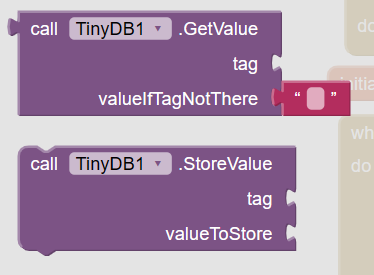
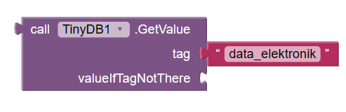
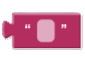
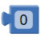
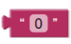
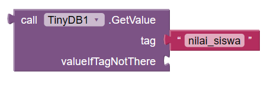

Pelajari blok TinyDB di bawah ini lalu jawablah 16 pertanyaan dengan tepat. Pilih opsi yang tersedia, centang kotak yang sesuai, atau ketik jawaban singkat Anda.

1. Apa fungsi utama dari komponen TinyDB di App Inventor?
2. Sifat penyimpanan "Variable" diibaratkan seperti jenis memori apa pada komputer, yang mana datanya akan langsung lenyap saat aplikasi ditutup?
3. Untuk memasukkan TinyDB ke dalam tampilan aplikasi, kita harus mencarinya pada Palette MIT App Inventor. Di laci (drawer) kategori manakah TinyDB berada?
4. TinyDB termasuk ke dalam jenis komponen "Non-Visible" di MIT App Inventor. Apa maksud dari komponen Non-Visible?
5. Perhatikan susunan blok program berikut ini:
Apa peran dari socket valueToStore pada blok di atas?
6. Saat membuat aplikasi, blok mana yang harus kita gunakan jika kita ingin mengambil atau menarik data yang sudah tersimpan di TinyDB?
7. Perhatikan struktur blok penarik data berikut:
Apa kegunaan dari socket valueIfTagNotThere?
8. Manakah saja pernyataan di bawah ini yang benar mengenai karakteristik TinyDB? (Pilih semua yang sesuai)
9. Kapan waktu (event) yang paling tepat untuk menjalankan perintah blok TinyDB.GetValue agar skor tinggi atau nama pengguna yang sudah disimpan kemarin otomatis langsung terlihat begitu aplikasi baru dibuka?
10. Perhatikan dua kejadian penyimpanan data di bawah ini:
Hari Pertama:
Hari Kedua:
Jika kita menyimpan data dengan Tag "Skor" yang bernilai 100, lalu di hari berikutnya kita mengeksekusi blok lagi dengan Tag yang persis sama namun Valuenya 500. Apa yang akan terjadi pada data awal (100) di dalam TinyDB?
11. Berdasarkan gambar blok referensi di bagian atas, apa nama blok yang digunakan khusus untuk MEMANGGIL atau MENGAMBIL data dari TinyDB?
12. Saat menggunakan blok StoreValue maupun GetValue, kita diwajibkan untuk mengisi socket tag.
Mengapa pengisian nama pada tag (seperti contoh "Koin" di atas) ini sangat penting bagi database?
13. Coba perhatikan blok GetValue di bawah ini:
Apabila pada socket valueIfTagNotThere kita memasang blok teks yang benar-benar kosong, dan pengguna tersebut baru pertama kali menginstal game ini (belum ada data sama sekali). Apa yang akan muncul/didapatkan saat blok GetValue ini dipanggil?
14. Apabila kamu ingin menyimpan jumlah koin yang didapatkan pemain ke dalam TinyDB, maka blok variabel koin tersebut harus ditarik dan dipasangkan (disambungkan) pada socket apa di dalam blok StoreValue?
15. Jika seorang pemain game merasa skornya terlalu jelek dan menekan tombol "Reset Skor", blok TinyDB manakah yang secara khusus digunakan untuk menghapus data berdasarkan nama tag tertentu?
16. Perhatikan gambar blok di bawah ini:

Berdasarkan nama tag yang digunakan, blok apa yang paling tepat untuk dipasangkan ke dalam socket valueIfTagNotThere?



17. Perhatikan gambar blok di bawah ini:
